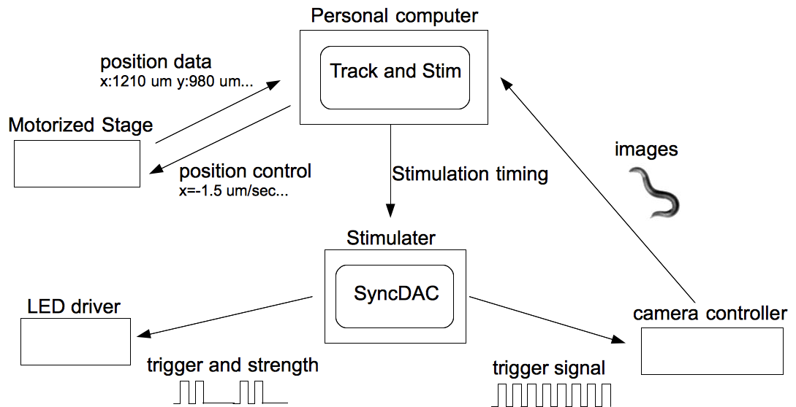
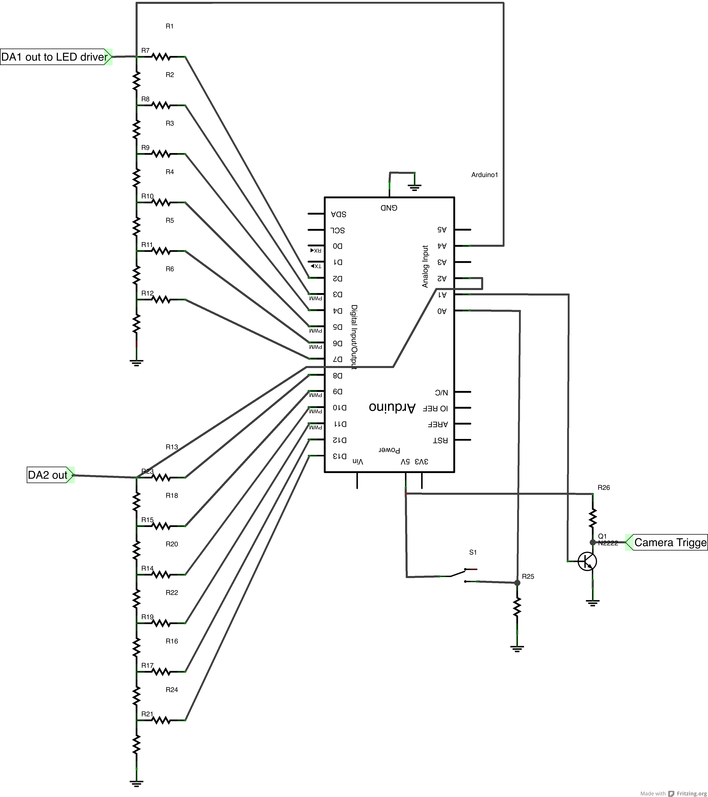

Stimulator
This document tells you how to use the Stimulator (or LEDstimulator) to apply optical stimulation. See other documents about Tracker and Stimulater, a plugin for micromanager, to know details of parameters. See Appendix for parts list.
ATTENTION: The current set up has potential danger of Strong light. It might cause serious damage of your eyes. Before start experiment make sure your procedure and carefully avoid looking at eyepiece during the LED lighting.
This software is provided "as is" and there is no warranty or support of any kind.
Copyright © 2013 Taizo Kawano
1 Schematics
Schematics of Hardware system and work flow

The TrackStim plugin manages the Real-time processing part in the above figure. It processes images captured by the CCD camera to detect bright objects and control the motorized stage to track the object. The coordinate of the stage is stored in the header of tiff image files. Stimulator (or LEDstrimulator) synchronize camera shutter and LED light, so that Strong LED light will not turn on during camera exposure period. After the imaging, other programs, such as DVtracer or BFtracker, has to be employed for further analysis (Post processing).
2 Setup

-Hardware connection and setup-
Connect DA1 BNC to Thorlab LED driver.
Connect trigger out to trigger in of Hamamatsu camera controller.
Connect USB of SyncDAC to USB port of MacPro. (it has to be right port of back of mac pro)
Set LED driver mode to modulation mode (left most) and turn the dial bit to right (you should hear click). See thorlab LED driver manual for more information. LEDD1B-Manual.pdf
Turn on stage controller, camera controller and scope.
Set #2 (gfp) filter set. DO NOT USE #1 or #3. These filter set could pass the blue LED light directory to eyepiece and it may be hazardous.
Choose 10x objective.
Take a lid of plate having an animal, invert it and put on the slide on the stage.
-Software operation-
Open micromanager.
Click image button and open a preview window.
Start TrackandStim (tracker and stimulater) plugin.
In micromanager main window, choose 128gain preset. This step required first, because of unknown bug.
Then, Choose BF trigger control preset.
Set exposure and cycle length in the plugin window. 50 msec exposure and 100 msec cycle length might be good to start with
This operation send a signal to SyncDAC and it produce repetitive trigger signal that control shutter timing of CCD camera.
Double check the exposure and cycle length by looking at the preview window.
Check the "Light" check box and set rest of parameters. The unit is msec.
Setup the frame number etc. For bright field imaging, check Full field and Bright field check boxes.
Take images as usual.
ATTENTION
Don't look into eyepiece during experiment. With some combination, the LED light directory reach to the eyepiece, and If you see it , the strong light cause damage of your eyes.
Stimulator
The Stimulator called above consist of Arduino microcontroller and R2-R ladder digital-analog (DA) converter . The electric power supply through USB or 5V AC adaptor. The DA1 is connected to the Thorlabs LED driver by BNC connector. DA2 is constructed on PCB board for future expantion such as 2 color control, but not implemented for now. The microcontroller send TTL trigger signal by A1 port to Hamamatsu camera controller by BNC. The signal synchronized with DA1 output as negative polarity (High voltage is off, low voltage is on). So use negative option at micromanager preset setup. There is a toggle switch on the box. It can turn on LED at any time.
Electrical circuit
Electrical circuit
The resistors in the figures are 1k or 2k.

SyncDAC Arduino code and communication format
Here is the Arduino code and communication format
SyncDAC (synchronize and Digital-Analog converter)
The following is the code loaded to the Arduino. See comment lines to know communication format etc.
// This code is for Arduino leonardo that has a shield consist of
// a 6bit(64step) DA converter x2, and a trigger output for control external device (hamamatsu orca R2)
// Aim to synchronize DAC and trigger signal.
//
//
//-----Hardware specification
//port 2-7 used for 6bit DA1. The port 2 is top bit and 7 is lowest.
//port 8-13 is DA2 (R2-R ladder was constructed. output line is not connected, so cant use for now.)
//each DA1 DA2 output is connected to analog4 and 2 so that can sense of output volatages.
//(not implemented in this code)
//To output 5V at DA1 anytime, toggle switch connect 5V-2k resistor-ground.
//The potential of 2k resistor is sensed at analog0 port.
//The trigger sends via analog1 port connected base of NPN pull upped with 1k.
//So use negative polarity signal.
//-----Serial connection format
//input is 8bit and if 8th digit 0=DA1 order, 1=DA2 order
//-> changed to use both 8th and 7th. 00=DA1, 10=DA2, 01 and 11=trigger cycle setting
//eg. B00111111 is DA1 with max (63) strength.
//B11000000 is chage cyclelength and triggerlength to 0.
//In this case, lower 3 bits set triggerlength, next 3 are for cycletength
//ver4 add toggle switch as force on switch. analog0 port sense it.
//ver3 modify for leonardo and 6bit 2ch
//ver2 try serial communication to set output value
//byte is unsigned. be carefull.
//serial sending
long beforetime=0;
//cycle stuff
unsigned long currentmicro=0;
unsigned long premicrotime=0;
unsigned long difftime=0;
unsigned long cyclelength=10000000;//microsec
//trigger exposure
unsigned long triggerlength=5000000;
boolean triggerflag=false;
boolean DACflag=false;
int triggerlengtharray[]={
0,1,10,50,100,200,500,1000};//3bit 8 values msec.
int cyclelengtharray[]={
0,50,100,200,500,1000,2000};//use 3bit
//voltage sensing
int sensorPin = A4; // the input pin for the potentiometer
//int sensorPin2 = A2; // the input pin for the potentiometer
int counter=0;
//int ledPin = 13; // the pin for the LED
int ordervalue=0; // 0-63
int oldordervalue=0;
int sensorValue = 0; // variable to store the value coming from the sensor. signed 2 bytes
byte MASK=B00000001;
//sending data format
//1-4th byte; time (micros), 5-6th byte; analogread, 7th byte; escape flag, 8thbyte; period signal.
//byte sendingdata[8];
byte ESC=B00000000;
byte PERIOD=B11111111;
unsigned long time;//put micros(). 4 bytes
boolean forceswitch=false;
boolean testflag=true;
void setup()
{
//sendingdata = new byte[8];
//pinMode(13, OUTPUT);//portB 6th
//pinMode(0, OUTPUT);//0 and 1 used for serial connection
//pinMode(1, OUTPUT);
pinMode(2, OUTPUT);//DA1 6th bit (most upper)
pinMode(3, OUTPUT);
pinMode(4, OUTPUT);
pinMode(5, OUTPUT);
pinMode(6, OUTPUT);
pinMode(7, OUTPUT);
pinMode(8, OUTPUT);//DA2 most upper
pinMode(9, OUTPUT);
pinMode(10, OUTPUT);
pinMode(11, OUTPUT);
pinMode(12, OUTPUT);
pinMode(13, OUTPUT);//most lower bit, so even=off, odd=on
//DDRD = DDRD | B11111100;
//DDRB=B00100011;//need two more bit for 256
//Serial.begin(19200);
pinMode(14, INPUT);//set analog0 as digital input. for force switch
pinMode(15, OUTPUT);//set analog1 as digital output. for trigger
Serial.begin(9600);
}
void loop()
{
currentmicro=micros();
//serial order. read any time. use when trigger is off
if(Serial.available()>0)
{
ordervalue = Serial.read();
if((ordervalue&(MASK<<6)))
{
setCycleprop();
}
}
//checking A1 pin
/*
if(currentmicro-premicrotime>10000000)
{
premicrotime=currentmicro;
digitalWrite(A1, testflag);//trigger on
digitalWrite(13, testflag);
testflag=!testflag;
}*/
difftime=currentmicro-premicrotime;
//need overflow counter plan.
if(premicrotime>currentmicro)
{
difftime=(4294967295-premicrotime)+currentmicro;
}
if(difftime >= cyclelength)
{
//checking code
digitalWrite(13, testflag);
testflag=!testflag;
//-checking code
}
//if(difftime>cyclelength)
//if(cyclelength<0)
//{
//checking code
//digitalWrite(13, HIGH);
//testflag=!testflag;
//-checking code
//}
//beginning of a period. trigger signal on.
// if trigger length is 0, dont set trigger.
if(triggerlength!=0 && !triggerflag && (difftime >= cyclelength))
{
DACflag=false;
triggerflag=true;
premicrotime=currentmicro;
if(forceswitch)
{
forceswitch=false;
//anyway off the DA1 below, so comment out three lines
//for(int i=0;i<6;i++)
//{
//digitalWrite(i+2, LOW);
//}
}
for(int i=0;i<6;i++)
{
digitalWrite(i+2, LOW);//DA1 set 0
//digitalWrite(i+8, LOW);//DA2 not using now
}
//need wait? -> no. If too strong light hit CCD, it may not cancel?
//if there is some decline device, like filter, the led not deteced at all. seems works
//delayMicroseconds(1000);
digitalWrite(A1, HIGH);//trigger on
//delayMicroseconds(1000);
}
//during trigger on
else if(triggerlength!=0 && triggerflag && (difftime < triggerlength))
{
//do nothing
}
//off edge of trigger
else if(triggerlength!=0 && triggerflag && (difftime >= triggerlength))
{
triggerflag=false;
//delayMicroseconds(1000);
digitalWrite(A1, LOW);//trigger off
//delayMicroseconds(1000);
}
//rest part of period.
else
{
//toggle switch is off
if(!digitalRead(A0))//digitalRead(14) doesn't work
{
//
if(!DACflag || oldordervalue!=ordervalue)//first time of the period or order has changed.
{
oldordervalue=ordervalue;
DACflag=true;
if(forceswitch)
{
forceswitch=false;
for(int i=0;i<6;i++)
{
digitalWrite(i+2, LOW);
}
}
//these two lines are for older arduino. leonardo has different port-pin assign.
//using port resister allow fast regulation. about MHz?
//PORTD = ordervalue<<2;//lower 2 bits used for serial port
//PORTB = ordervalue>>6;//
//digitalWrite function slower than port resister. 10kHz?
//if((ordervalue>>7)&MASK==0)//DA1 0 this code doesn't work.
if(!(ordervalue&(MASK<<6)))//this bit flag means setting of cycle property
{
//if(!(ordervalue&(MASK<<7)))
if(!(ordervalue&(MASK<<7)))
{
//digitalWrite(2, );//most upper value of 6bit
for(int i=0;i<6;i++)
{
digitalWrite(i+2, ordervalue&(MASK<<5-i));
}
}
else//DA2
{
for(int i=0;i<6;i++)
{
//digitalWrite(i+8, ordervalue&(MASK<<5-i));
}
}
}
}
}//if(!digitalRead(A0))
else//toggle switch is on. so max strength
{
if(!forceswitch)
{
forceswitch=true;
for(int i=0;i<6;i++)
{
digitalWrite(i+2, HIGH);
}
}
}
}
//sending analog read every 10 msec
//if(millis()-beforetime >= 10)
if(millis()-beforetime >= 1000)
{
beforetime=millis();
//time=millis();
//Serial.print((int)byte(time>>8));
//Serial.print(" ");
//Serial.println(lowByte(time>>8));
//int testval=1024;
//Serial.println(testval);
byte sendingdata[8];
time=micros();
//sensorValue is 10bit (-1024)
//sensorValue = analogRead(sensorPin);
//to check reciving, just send order value
sensorValue = ordervalue;
//upper bit
sendingdata[0]=lowByte(time);
sendingdata[1]=lowByte(time>>8);
sendingdata[2]=lowByte(time>>16);
sendingdata[3]=lowByte(time>>24);
sendingdata[4]=lowByte(sensorValue);
sendingdata[5]=lowByte(sensorValue>>8);
sendingdata[6]=B00000000;//this line is needed. prep new valiable is not enough to clean?
for(int i=0; i<6; i++)
{
if(sendingdata[i]==PERIOD)
{
sendingdata[i]=ESC;
sendingdata[6]=sendingdata[6]|(B00000001<>3)&B00000111];
cyclelength=cyclelength*1000;
}
Appendix
Parts of Blue LED and LED driver
These parts are obtained from Thorlabs (http://www.thorlabs.com/)
M470L2 - Blue (470 nm) Mounted High Power LED, 1600 mA
http://www.thorlabs.com/thorProduct.cfm?partNumber=M470L2
260
LEDD1B - T-Cube LED Driver, 1200 mA Max Drive Current (PSU Not Included)
http://www.thorlabs.com/thorProduct.cfm?partNumber=LEDD1B
284
TPS001 - 15 V Power Supply Unit for a Single T-Cube
http://www.thorlabs.com/thorProduct.cfm?partNumber=TPS001
25
SM1L03 - SM1 Lens Tube, L = 0.3", One Retaining Ring Included
http://www.thorlabs.com/thorProduct.cfm?partNumber=SM1L03
12.16
SM1V05 - Ø1" SM1 Rotating Adjustable Focusing Element, L = 1/2", 0.32" Travel
http://www.thorlabs.com/thorProduct.cfm?partNumber=SM1V05
29.6x2
SM1RR - SM1 Retaining Ring for Ø1" Lens Tubes and Mounts
http://www.thorlabs.com/thorProduct.cfm?partNumber=SM1RR
4.5x4
ACL2520-A - Aspheric Condenser Lens, AR-Coated 350-700 nm, Ø25 mm, f=20 mm
http://www.thorlabs.com/thorProduct.cfm?partNumber=ACL2520-A
25.6
ACL2520-DG6-A - Aspheric Condenser Lens w/ Diffuser, Ø25 mm, f=20 mm, 600 Grit, ARC: 350 nm - 700 nm
http://www.thorlabs.com/thorProduct.cfm?partNumber=ACL2520-DG6-A
25.6
CM1-DCH/M - 30 mm Cage Cube with Dichroic Filter Mount (Metric)
http://www.thorlabs.com/thorProduct.cfm?partNumber=CM1-DCH/M
150
MD498 - GFP Dichroic Filter, Refl. Band = 452-490 nm, Trans. Band = 505-800 nm
http://www.thorlabs.com/thorProduct.cfm?partNumber=MD498
195
MF469-35 - GFP Excitation Filter, CWL=469 nm, BW=35 nm
http://www.thorlabs.com/thorProduct.cfm?partNumber=MF469-35
200
SM1A23 - Zeiss Axioskop Microscope Lamphouse Port Adapter, Internal SM1 Threads, 30 mm Cage Compatibility
http://www.thorlabs.com/thorProduct.cfm?partNumber=SM1A23
88
SM1T2 - SM1 (Ø1.035"-40) Coupler, External Threads, 0.5" Long
http://www.thorlabs.com/thorProduct.cfm?partNumber=SM1T2
19.5x2
SM1CP2 - Externally SM1-Threaded End Cap
http://www.thorlabs.com/thorProduct.cfm?partNumber=SM1CP2
17
Parts for arduino and DAC
This list is taken from ordering list to Digikey. Some of them are not used and Some parts used actual device are purchased at Homehardware (290 College Street Toronto, ON M5T 1S2, Canada) and CREATRON (255 College Street, Toronto, ON M5T 1R5, Canada) which are not listed here.
USB cable A male to microB male $3.62
http://www.digikey.com/product-detail/en/102-1092-BL-00050/1175-1127-ND/3064858
BNC male male 50ohm 60 cm $8.49
http://www.digikey.com/product-detail/en/58-024-1M/290-1010-ND/268022
BNC femle panel mount $2.52
http://www.digikey.com/product-detail/en/0731315003/WM5379-ND/2755895
arduino leonardo for 2x 8bit $22.44 -> 23.34
http://www.digikey.com/product-detail/en/A000057/1050-1040-ND/3476353
box $12.34 -> 12.84
http://www.digikey.com/product-detail/en/A000009/1050-1003-ND/2638991
prototyping bord without header $3.74 -> 3.89
http://www.digikey.com/product-detail/en/A000082/1050-1027-ND/2784008
with header $7.44
http://www.digikey.com/product-detail/en/PROTO-SHIELD/1188-1055-ND/3471397
resisters 8 bit x2 1% 1kx7x2=14 2kx9x2=18
1k minimum 5 0.49 x4
http://www.digikey.com/product-detail/en/MFR-25FBF-1K00/1.00KXBK-ND/13011
2k minimum 5 0.49 x4
http://www.digikey.com/product-detail/en/MFR-25FBF-2K00/2.00KXBK-ND/13070
cables
7 History
130111 initial version
130709 update